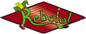

<!DOCTYPE html "-//W3C//DTD XHTML 1.0 Strict//EN"   "http://www.w3.org/TR/xhtml1/DTD/xhtml1-strict.dtd">
<html xmlns="http://www.w3.org/1999/xhtml">
<head>
<meta http-equiv="content-type" content="text/html; charset=utf-8" />
<title>Google Maps JavaScript API Example</title>
<script src="http://maps.google.com/maps?file=api&amp;v=2&amp;key=ABQIAAAAwn2q2pKZkFYorcgtyBKztRRsZgunNhOtphAIoEk_SRhy96SxeBTCPFePnuGFH26EuO2UgOX8PLW3ng" type="text/javascript"></script>
<script type="text/javascript">
  
function initializeMyMap()
{
    var map1 = new GMap2(document.getElementById("map_canvas1"));   
    map1.setCenter(new GLatLng(45.526353, 9.044385), 17);  
    map1.setMapType(G_HYBRID_MAP);
    var top1 = new GControlPosition(G_ANCHOR_TOP_RIGHT, new GSize(10,10));
    var top2 = new GControlPosition(G_ANCHOR_TOP_RIGHT, new GSize(10,35));
    
    map1.addControl(new GMapTypeControl(),top1);//i tipi di mappa
    map1.addControl(new GLargeMapControl(), top2);//scale e pan

    var icona = new GIcon(G_DEFAULT_ICON);
    icona.image = "http://gmaps-samples.googlecode.com/svn/trunk/markers/blue/blank.png";
    var punto = new GLatLng(45.526353, 9.044385);
    
    markerOptions = { icon:icona };
    var marcatore = new GMarker(punto, markerOptions);
    
    map1.addOverlay(marcatore);   
    GEvent.addListener(marcatore, "click", function()
    {    
        stringahtml=" <br/> <b>Benvenuti allo Spazio Rebelot!</b>"
        map1.openInfoWindowHtml(punto,stringahtml);
    });
}
</script>

</head>
<body onload="initializeMyMap();" onunload="GUnload();">
    <div id="map_canvas1" style="width:780px;height:570px;float:left;"></div>
</body>
</html>
